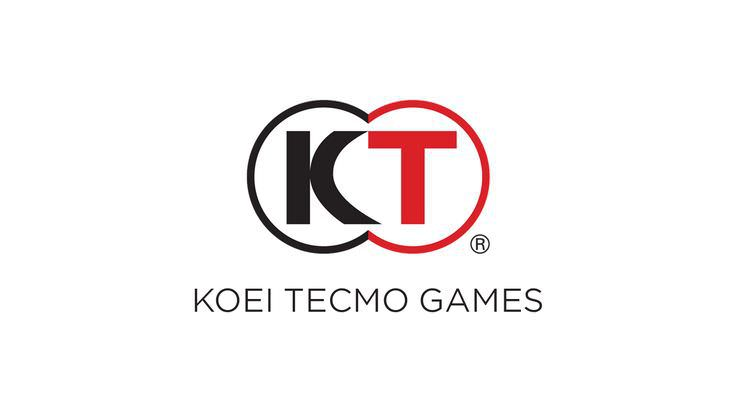

Team Ninja: Es un estudio desarrollador de videojuegos antiguamente dirigido por Tomonobu Itagaki y fundado en 1995. Se trata de una subsidiaria de Tecmo, Ltd. y es más conocida por las sagas Dead or Alive, Ninja Gaiden y Nioh. Ninja Gaiden 2 fue publicado por Microsoft Game Studios en exclusiva para Xbox 360, siendo el primer juego creado por Team Ninja no publicado por Tecmo. Más tarde Tecmo decidió publicar Ninja Gaiden 2 en PS3 en una mejorada versión Sigma. Nioh, es un videojuego de rol de acción desarrollado por Team Ninja y Kou Shibusawa, para PlayStation 4 (PS4). Fue lanzado por primera vez en todo el mundo en febrero de 2017, y fue publicado por Sony Interactive Entertainment a nivel internacional y Koei Tecmo en Japón. Una edición para PS4 y Microsoft Windows, que contiene todo el contenido descargable (DLC) del juego, fue lanzada el 7 de noviembre de 2017 por Koei Tecmo. Una versión remasterizada fue lanzada para PlayStation 5 el 5 de febrero de 2021. 